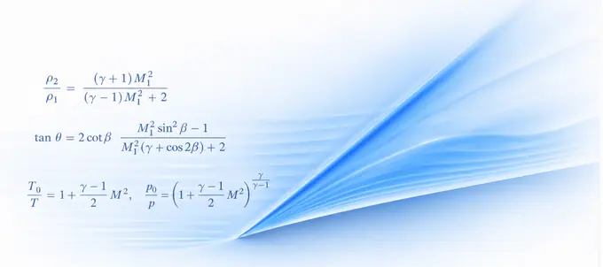

Compressible Flow
High-Speed Gas Dynamics
Thermodynamic foundations, isentropic flow, shock relations, and Prandtl–Meyer expansion in compressible aerodynamics.

Study Contents
05 CHAPTERS · 16 ARTICLES9 articles available · 7 articles in preparation.
Fundamentals of Compressible Flow
4 ARTICLESIsentropic Flow
2 ARTICLESNormal Shock Waves
3 ARTICLESOblique Shock Waves
4 ARTICLES
4.1Oblique Shock GeometryFlow deflection, shock inclination, and normal velocity components.Planned
4.2Oblique Shock RelationsVelocity, pressure, and thermodynamic relations across oblique shocks.Planned
4.3Theta–Beta–Mach RelationThe relationship between deflection angle, shock angle, and Mach number.Planned
4.4Weak and Strong Shock SolutionsWeak and strong branches of the oblique shock solution.Planned
Prandtl–Meyer Expansion
3 ARTICLES
5.1Mach Waves and Expansion FansMach waves and the structure of supersonic expansion fans.Planned
5.2Prandtl–Meyer FunctionIsentropic supersonic expansion and the Prandtl–Meyer function.Planned
5.3Supersonic Flow over CornersSupersonic compression and expansion at flow-turning corners.Planned